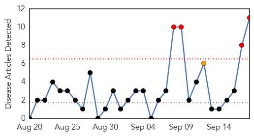
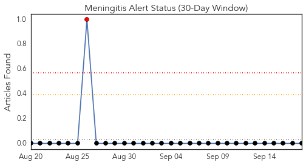
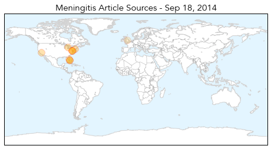
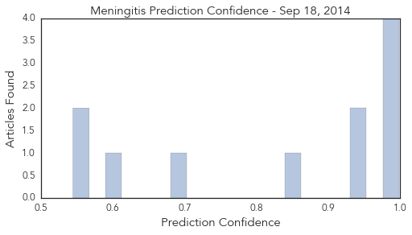

Toggle navigation
Early Warning
Daily Alerts
Meningitis
Sep 18, 2014
Compare to:
-
Dengue Fever
Hemmorhagic Fever
Mold/Fungal Infection
Influenza
Pertussis / Whooping Cough
Middle East Respiratory Syndrome
Cholera
Hepatitis
Chikungunya
Yellow Fever
Bubonic Plague
West Nile Virus
Swine Flu
Ebola
Measles
Unknown
Mumps
30 Day Trends
Web: 4
alerts
, 1
warnings
Twitter: 1
alerts
, 0
warnings
Top Articles:
0.999
2 Cases of Viral Meningitis Reported at Wilton High School
0.996
Another infectious disease gains momentum, dangerous for kids
0.995
Health Officials Tell Seniors to Get Flu, Pneumococcal Vaccines
0.992
Andrea Jaime, Georgetown Nursing Student, Dies After Tweeting 'I Think I'm Dying'
0.952
Pharmacist Raises Concerns Over Enterovirus as Illness Spreads
0.936
Georgetown offering preventive antibiotics to close friends of meningitis victim
0.857
Student Tweeted 'this is what dying must feel like' before death
0.698
Florida student attending Georgetown University dies from meningitis
0.594
Florida student dies from meningitis
0.554
Leeds mums lead meningitis campaign
0.544
Florida student dies from meningitis
Top Tweets:
No tweets found for Sep 18, 2014
Web/News Articles

Tweets

Article Locations

Article Confidences
